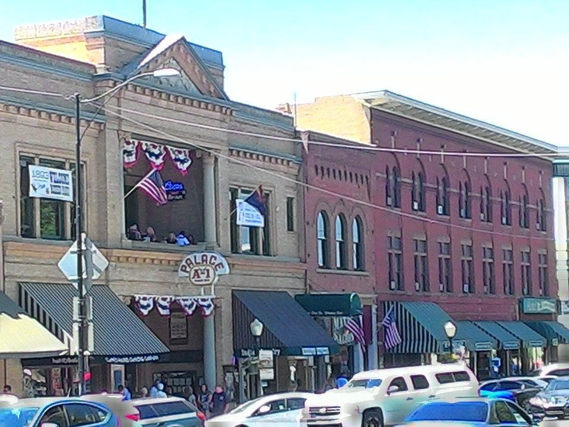

Downtown · Historic hotel
Hassayampa Inn
A 1927 hotel a block from the square.
Official details for Hassayampa InnWhiskey Row and cool pine air.
Prescott was Arizona’s first territorial capital, and its courthouse square and Whiskey Row of saloons still feel like the Old West, a mile high and much cooler than the desert below. Land at Prescott Regional, stay at the 1927 Hassayampa Inn, walk the square, paddle among the granite boulders of the Granite Dells, and drive the switchbacks to Jerome, a former copper town clinging to a mountainside.

In our plane it’s a short flight.
Where we’re staying Dinner Things to do The plan
I’ll handle the flight planning; you handle the fun planning!
Time illustration: direct distance at 150 KTAS plus 15 minutes for departure and arrival, matching the discovery page. Use ForeFlight for your actual flight plan.
Check the weekend weather at both ends → Flight category, your minimums and the crosswind on the best runway.
More in Aviation & getting around below. Crew cars change often: call the FBO before you go. How to have a rental car waiting at the FBO · Know something we missed? Tell us.
KPRC, Prescott Regional/Ernest A. Love Field, is a towered airport at 5,045 feet with a 7,619-foot main runway, about 15 minutes from downtown.
Prescott Regional Airport, Prescott, AZ
One of the busiest training airports in the country, home to Embry-Riddle; expect many students in the pattern. Voluntary noise-abatement procedures. Landing and overnight parking fees apply. No live fuel price is shown.
High desert flying: high density altitude in summer, strong gusty spring winds and mountain wave, afternoon monsoon storms from July to September, winter snow, and long distances between airports. About 1660 nm from Myrtle Beach: two long days each way with several fuel stops. Plan a week, or overnight on the way out and back.
Rates and availability need travel dates. Book early for the July rodeo.
A 1927 hotel a block from the square.
Official details for Hassayampa InnA 1901 hotel on Whiskey Row.
Official details for Hotel St. MichaelPrices and availability for your dates, through our partner Stay22. This is an affiliate link: we may earn a commission at no cost to you. The picks above are never paid.
Reserve weekend dinners.
Breakfast and lunch in the airport terminal with runway views; call ahead (928-445-6971).
City of Prescott for Susie’s Skyway RestaurantBreakfast, lunch and dinner at Antelope Hills Golf Courses, beside the airport; hours vary by season.
Official details for Manzanita GrillModern pub food in a historic building.
Official details for The Barley HoundTapas on Granite Creek.
Official details for El Gato AzulSaloons and restaurants downtown.
Experience Prescott for More restaurantsMornings are best for the Dells.
A pilot-themed coffee roaster and aviation gear shop near the airport (6750 Intercal Way); check hours before you go.
Rugged PilotThis prototype links to the local visitor site. It does not yet match events to your travel dates.
Prescott Frontier Days since 1888.
Prescott Frontier Days for World’s Oldest RodeoHoliday lights on the square.
Experience Prescott for Courthouse lightingMild days in the pines.
Experience Prescott for Best weatherCheck the local calendar when choosing a weekend, and confirm dates and tickets with the organizer.
A sample Prescott weekend. This is a two-day flight each way; plan a week. No bookings or availability confirmed.
Land at KPRC mid-morning.
Lunch on the courthouse square.
Watson Lake, then back to the airport.
Land at KPRC, subject to weather, density altitude and your actual flight plan.
The courthouse square and Whiskey Row.
Dinner at The Barley Hound.
Kayak Watson Lake.
Drive to Jerome.
Dinner at El Gato Azul.
Sharlot Hall Museum.
Compute takeoff performance for the temperature and allow time at the FBO.
Desert afternoons are hot, bumpy and gusty; leave in the morning.
Kayak the Granite Dells.
Jerome.
Dinner at The Barley Hound.
This guide is part of a multi-stop flying trip. Set your dates and aircraft, then swap stops to make it your own.
These details make the difference between an appealing list and a usable getaway.
Lodging first, especially for the rodeo.
About 1,660 nm from Myrtle Beach: two long days each way.
Expect lots of student traffic.
April to October.
Picks and links reviewed by WingAway Weekends. Hours, prices, menus and availability change often, so confirm directly with each place before booking. Spotted something out of date, or have a favorite we missed? Email us at hello@wingawayweekends.com.
WingAway Weekends helps you discover the destination. Use ForeFlight and current official aviation information for route, performance, weather, NOTAMs and preflight decisions. Flight planning and PIC responsibility stay with the pilot.
One fly-in weekend, a Fly to Lunch pick and the newest guides, about once a month.
Free. Unsubscribe anytime.